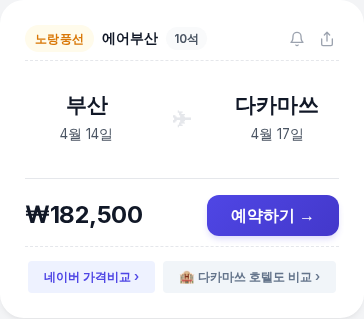

[2/24] 땡처리 항공권 특가 Top 5 🔥 동남아 특가 터졌다 🌴
안녕하세요!
여행사 땡처리 항공권 서비스,
티키티킷(tikitikit.kr)입니다.
거두절미하고
티키티킷에 올라온
가성비 충격 특가 Top 5를
바로 공개합니다! 👇
🏆 2/24 기준 특가 Top 5
🥇 1위
부산 ↔ 세부 (동남아)
제주항공 · 3/2(월)~3/6(금) · 4박 5일
151,500원

🥈 2위
인천 ↔ 청도 (중국)
산동항공 · 3/8(일)~3/10(화) · 2박 3일
174,300원

🥉 3위
부산 ↔ 다카마쓰 (일본)
에어부산 · 3/31(화)~4/3(금) · 3박 4일
179,000원

🌸 3월 말~4월 초 리쓰린 공원 벚꽃이 압권!
사누키 우동 + 벚꽃 산책, 소도시 힐링 🌸
4위
부산 ↔ 후쿠오카 (일본)
진에어 · 3/3(화)~3/6(금) · 3박 4일
185,000원

5위
인천 ↔ 마츠야마 (일본)
제주항공 · 3/31(화)~4/2(목) · 2박 3일
189,000원

🌸 3월 말 마츠야마성 벚꽃 + 도고 온천 조합!
세토내해 봄 풍경이 기다립니다 🌸
※ 유류할증료/텍스 포함 왕복 총액 기준
※ 땡처리 특성상 실시간으로 마감될 수 있습니다.
💡 에디터 픽 : 1위 부산-세부
부산-세부 왕복 151,500원!
제주항공 직항으로
4박 5일 알찬 일정입니다.
에메랄드빛 바다에서 아일랜드 호핑 🏝️
오슬롭 고래상어 투어까지 완벽 코스!
왕복 15만1,500원에 이 정도면
동남아 휴양의 정석이죠.
다양한 일정이 열려 있으니
마음에 드는 날짜를 골라보세요!
📌 인천 출발은 뭐가 있을까?
이번 인천 출발 최저가 라인업!

✈️ 청도 174,300원 (산동항공)
3/8~3/10 · 2박 3일 가성비 여행!
✈️ 마츠야마 189,000원 (제주항공)
3/31~4/2 · 🌸 벚꽃 시즌 2박 3일

✈️ 괌 189,000원 (진에어)
3/3~3/7 · 4박 5일 비치 리조트 꿀조합!

✈️ 세부 194,000원 (제주항공)
3/2~3/6 · 4박 5일 아일랜드 호핑 추천!

✈️ 상해(푸동) 214,700원 (중국 남방항공)
3/4~3/7 · 3박 4일 가성비 여행!
✨ 이번 주 항공권 꿀팁
🌸 벚꽃 시즌 꿀팁: 만개일 기준 1~2일 전에 도착하면 벚꽃 + 인파 피하기 둘 다 가능해요.
🏖️ 세부·보라카이·다낭은 3월이 수온도 따뜻하고 비도 적어 물놀이 최적기!
🇨🇳 중국 단거리 꿀팁: 비행 2시간 이내, 1박 2일도 가능한 가성비 목적지입니다.
지금 이 순간에도
국내 대표 5개 여행사의
미판매 땡처리 좌석이
실시간 업데이트되고 있습니다.
내 일정에 맞는 찐특가가
숨어있는지 궁금하다면?
#티키티킷 #땡처리항공권 #특가항공권 #세부여행 #청도여행 #다카마쓰여행 #후쿠오카여행 #마츠야마여행 #해외여행꿀팁